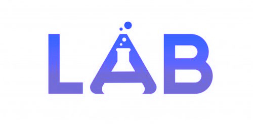

LABORATORIO AUTOMATIZADO BERTAZZI
LAB es una institución bioquímica privada que brinda servicios de Análisis Clínicos y Microbiológicos.
Emplazada en la ciudad de Córdoba, contamos con dos sedes (Centro y Residencial América)
donde ofrecemos un servicio integral a través de una amplia variedad de Análisis Bioquímicos
de diversas especialidades y grados de complejidad:
- Química Clínica
- Medio Interno
- Hematología y Hemostasia
- Endocrinología
- Serología
- Inmunoensayos
- Inmunohistoquímica
- Toxicología
- Microbiología
- (Bacteriología, Micología, Parasitología)
Contamos con profesionales altamente calificados en constante capacitación y actualización,
incorporamos nueva tecnología, trabajamos bajo estrictas normas de calidad,
y brindamos una atención personalizada y de confianza a nuestros pacientes.
Atendemos adultos y niños, tanto con obras sociales como particulares.